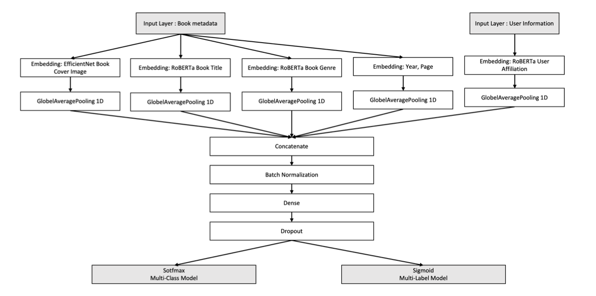

Download
Abstract
Despite the growing number of natural language processing (NLP) tools developed for decision-makers to leverage social media for public perception evaluation during crises, a more robust framework is needed. This study explores a domain-specific machine learning framework for perception analysis using tweets about bats during disease outbreaks as a case study. Zoonotic disease outbreaks such as COVID-19 and Ebola are often attributed to bats and have resulted in unnecessary culling of wildlife; therefore, this is a case where perception is meaningful to a species. Analysis of 15,968 tweets showed a pattern in which tweets with anti-bat perceptions were most common during the early phases of an outbreak but declined over time while remaining negative, with 87.6% reliability of the framework according to manual coding of 300 randomly selected tweets. The framework can help stakeholders understand trends in public perception in near real-time and guide responses to spreading misinformation.
Figure X: Figure caption

Citation
Okpala, I., Romera Rodriguez, G., Han, C., Meierhofer, M., Mammola, S., Halse, S., … & Johnson, J. (2024). A Framework for Perception Analysis of Social Media Data During Disease Outbreaks: Uncovering Patterns of Resentment Towards Bats.
@article{okpala2024framework,
title={A Framework for Perception Analysis of Social Media Data During Disease Outbreaks: Uncovering Patterns of Resentment Towards Bats},
author={Okpala, Izunna and Romera Rodriguez, Guillermo and Han, Chaeeun and Meierhofer, Melissa and Mammola, Stefano and Halse, Shane and Kropczynski, Jess and Johnson, Joseph},
year={2024}
}